11/07/2024 — Hãy xem kết cục có thể tồi tệ đến mức nào nếu bạn không biết các dấu hiệu OMI trên điện tâm đồ và không dùng Queen of Hearts
Bản dịch tiếng Việt của bài "See how bad the outcome can be if you don’t know OMI findings on the ECG, and don’t use the Queen of Hearts" – Dr. Smith’s ECG Blog. Giữ nguyên toàn bộ 13 hình ảnh của bản gốc.
Đây là một ca khác do cậu sinh viên đại học (đang nộp đơn vào trường y) làm kỹ thuật viên điện tâm đồ gửi tới.
Làm sao một cậu trẻ thậm chí chưa bắt đầu học y lại có thể biết nhiều đến vậy về điện tâm đồ và tim mạch học? Bởi vì:
1) Cậu ấy đã đọc blog này từ lâu.
2) Cậu ấy ham tìm hiểu
Pendell cũng đã bắt đầu như thế.
Ca bệnh
Một
bệnh nhân nam 43 tuổi, tiền sử đái tháo đường típ 2 (DM II), rối loạn lipid máu và tiền sử
gia đình có nhồi máu cơ tim, đến một phòng khám y học gia đình vì đau
thượng vị hai ngày, khởi phát sau bữa ăn. Ông
mô tả cơn đau là cảm giác “bị đè nghiến và khó chịu”, không
lan. Ông cho biết cơn đau tăng khi gắng sức và không có gì
làm giảm. Huyết áp 138/88, tần số tim 77 lần/phút. Ông được ghi điện tâm đồ
tại phòng khám:

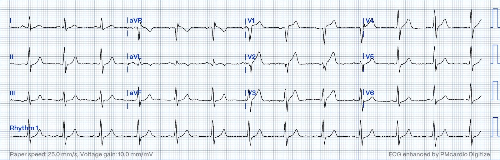
Bạn nghĩ gì?
Không
có điện tâm đồ cũ để so sánh, tuy nhiên chỉ riêng điện tâm đồ này đã đủ chẩn đoán
tắc LAD.
Sóng T ở V1-V4 là sóng T tối cấp (hyperacute). Có đoạn ST thẳng đuỗn
dốc lên ở V2 và V3. Có phức bộ QS phân mảnh
ở V2. Chuyển đạo aVL có sóng T lồi rất kín đáo với phần cuối sóng T
đảo ngược. Có đoạn ST thẳng đuỗn nằm ngang rất nhẹ
ở các chuyển đạo III và aVF. Các chuyển đạo dưới này có thể bình thường, tuy nhiên,
khi kết hợp với sóng T tối cấp ở thành trước, chúng nên được
diễn giải là thay đổi soi gương (reciprocal). V6 cũng có ST chênh xuống
rất nhẹ. Điện tâm đồ này cho thấy hình ảnh xoáy trước tim (Precordial Swirl) (STE ở V1-2 kèm STD ở V5-6).
Smith: còn có sóng Q ở V2 và một chút STE. STE hầu như không bao giờ bình thường khi có sóng Q. Ngoài ra, có STD ở V5-6. STE ở V1-V4 không bao giờ bình thường nếu đồng thời có STD ở bất kỳ chuyển đạo nào ngoại trừ aVR. Có nhiều lý do để điện tâm đồ này chẩn đoán OMI LAD.
Như vậy, đây lại là một ca “xoáy trước tim” nữa.
Precordial Swirl — 20 cases of Swirl or Look-Alikes (Xoáy trước tim — 20 ca xoáy hoặc giống xoáy)
Có
thể lập luận rằng thay đổi soi gương ở đây chưa đủ rõ
để kết luận, nhưng điều quan trọng cần nhớ là nhiều ca tắc LAD
hoàn toàn không có thay đổi soi gương.
Thuật
toán chẩn đoán của máy tính đưa ra “Nhịp xoang. Điện tâm đồ bình thường”. Bác sĩ
điều trị chính ghi “Đồng ý với kết quả đọc điện tâm đồ”. Kết quả đọc lại (overread) của bác sĩ tim mạch là: Nhịp xoang. Điện tâm đồ bình thường.
Smith: Mọi bác sĩ, kể cả bác sĩ tim mạch, đều gặp khó khăn với các dấu hiệu OMI kín đáo trên điện tâm đồ. Kết quả này thường gặp và không có gì đáng ngạc nhiên.
Nhìn
chung, bác sĩ y học gia đình có thể không được tiếp xúc với điện tâm đồ
nhiều như bác sĩ chuyên khoa cấp cứu hay bác sĩ tim mạch,
nhưng họ không nên phải dựa vào thuật toán chẩn đoán
truyền thống của máy tính.
Nếu thay vào đó bác sĩ đã dùng Queen of Hearts, vốn
chẩn đoán OMI với độ tin cậy cao, kết cục có lẽ đã khác:

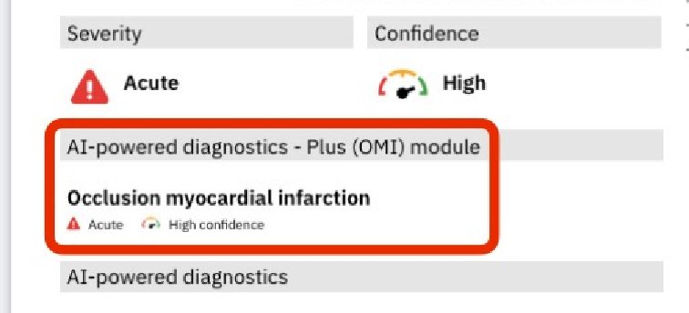
OMI với độ tin cậy cao
Bấm vào đây để đăng ký truy cập Queen of Hearts
Ca bệnh tiếp diễn
Đáng tiếc,
điện tâm đồ này đã không được chú ý, và các triệu chứng không điển hình mà
bệnh nhân biểu hiện đã không thúc đẩy thêm thăm dò tim mạch nào khác. Công thức máu và
bảng sinh hóa chuyển hóa được chỉ định, cả hai đều không có gì đáng chú ý, ngoại trừ
tăng đường huyết. Bệnh nhân được cho về nhà với đơn thuốc
omeprazole để điều trị tình trạng được cho là bệnh lý dạ dày tá tràng. Trong những
tuần sau đó ông vẫn có các đợt nóng rát sau xương ức và khó thở khi gắng sức
ngày càng nặng.
Không bệnh nhân đau ngực nào được cho về nhà mà không làm xét nghiệm troponin. Ngay cả khi bạn bỏ sót điện tâm đồ, ít nhất bạn vẫn có thể chẩn đoán nhồi máu cơ tim nhờ troponin, dù nếu đó là OMI, bạn có thể mất rất nhiều cơ tim trước khi đưa ra chẩn đoán.
Ông
quay lại phòng khám y học gia đình để tái khám một tháng sau
lần khám đầu. Lúc này huyết áp 82/68, tần số tim 112. Ở
lần khám này, ông cho biết khả năng gắng sức ngày càng giảm, mới xuất hiện khó thở khi nằm,
và ông nói với bác sĩ rằng omeprazole không làm giảm bất kỳ
triệu chứng nào. Điện tâm đồ được ghi lại:

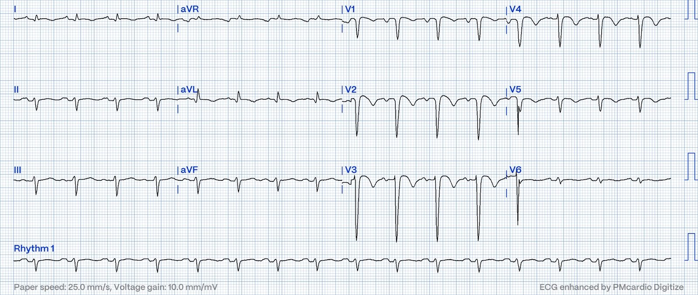
Điện tâm đồ này cho thấy nhồi máu thành trước đã hoàn tất! Hầu như không còn sóng R ở bất kỳ chuyển đạo trước tim nào!
Bác sĩ
nhận ra những thay đổi rõ rệt giữa bản ghi này và
bản ghi một tháng trước. Ông chuyển bệnh nhân tới khoa cấp cứu (ED) để đánh giá
thêm. X-quang ngực ở khoa cấp cứu phát hiện tràn dịch màng phổi hai bên.
BNP của bệnh nhân là 738, và D-dimer tăng, dẫn tới chụp CT
để loại trừ thuyên tắc phổi (PE). Phim chụp không thấy PE, nhưng cho thấy bằng chứng
mảng xơ vữa mạch vành:

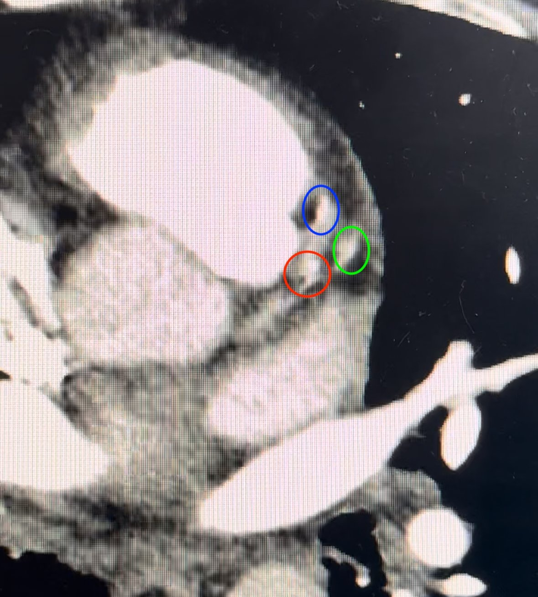
Có các vùng trắng đậm ở LAD (vòng tròn đỏ và xanh dương) và ở nhánh chéo thứ nhất (vòng tròn xanh lá).
Siêu âm tim cho thấy chức năng tâm thu toàn bộ giảm nặng với
EF 20-25% và huyết khối mỏm thất trái. Troponin I tăng từ
0,262 lên 0,746 ng/mL trong 6 giờ (giới hạn trên tham chiếu (URL) của xét nghiệm này là 0,034 ng/mL).
Bệnh nhân được nhập viện từ khoa cấp cứu và cuối cùng được chụp mạch vành vào sáng
hôm sau:
Chụp mạch vành:
Ảnh 1:

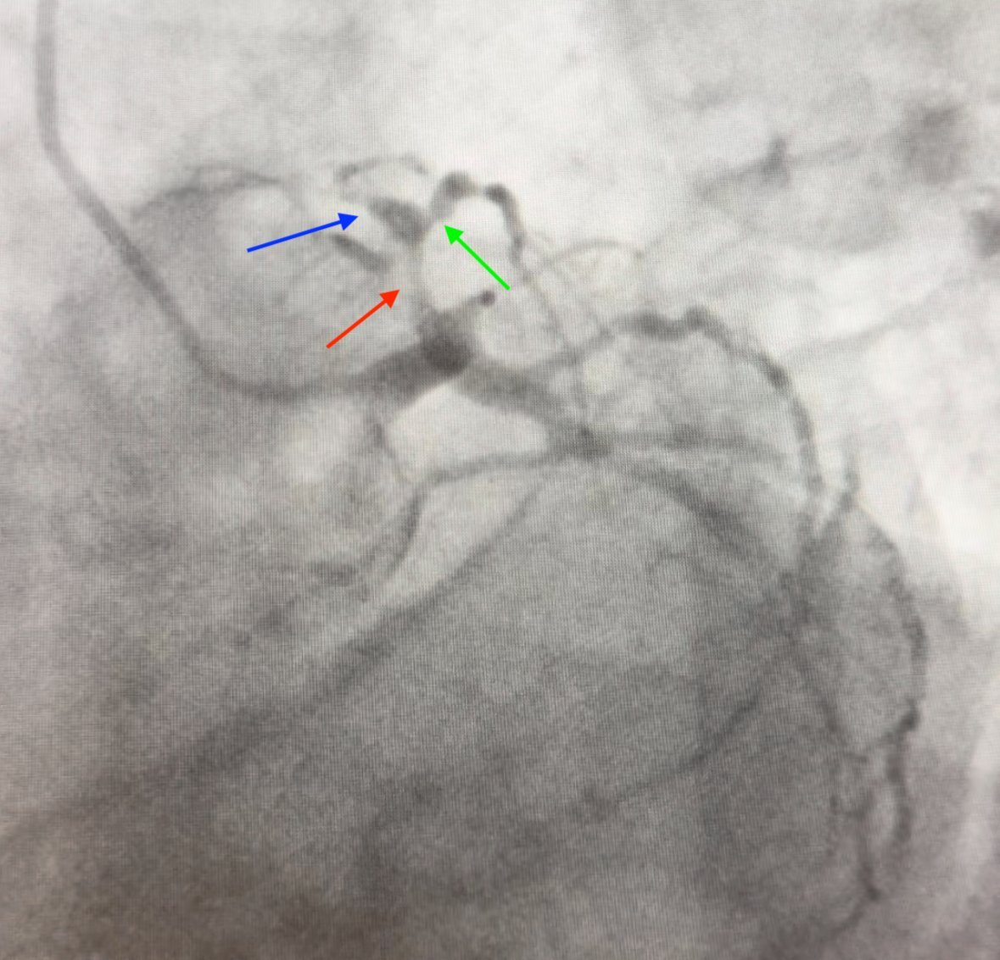
Đây
là tư thế LAO (chếch trước trái) chếch chân (caudal), hay còn gọi là tư thế “con nhện” (spider). Mũi tên đỏ chỉ chỗ hẹp khoảng
80% ở LAD đoạn gần. Mũi tên xanh dương chỉ một chỗ hẹp khác
của LAD ở phía xa nhánh chéo thứ nhất, khoảng 99%. Mũi tên xanh
lá chỉ chỗ hẹp 95% ở lỗ xuất phát của nhánh chéo thứ nhất.
Ảnh 2:

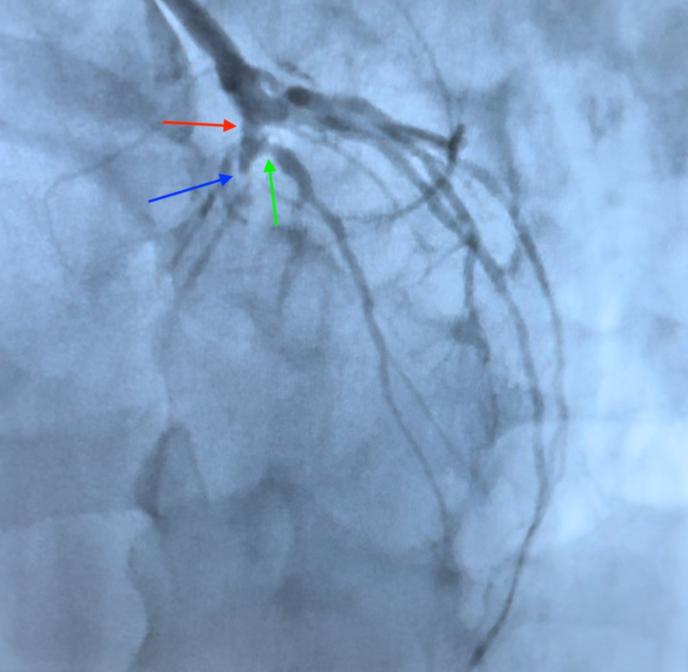
Đây là tư thế LAO chếch đầu (cranial). Ở đây, các chỗ hẹp LAD đoạn giữa (mũi tên xanh dương) và lỗ xuất phát nhánh chéo thứ nhất (mũi tên xanh lá) được thấy rõ hơn. Cả ba tổn thương đều có dòng chảy TIMI 2 trước khi đặt stent.

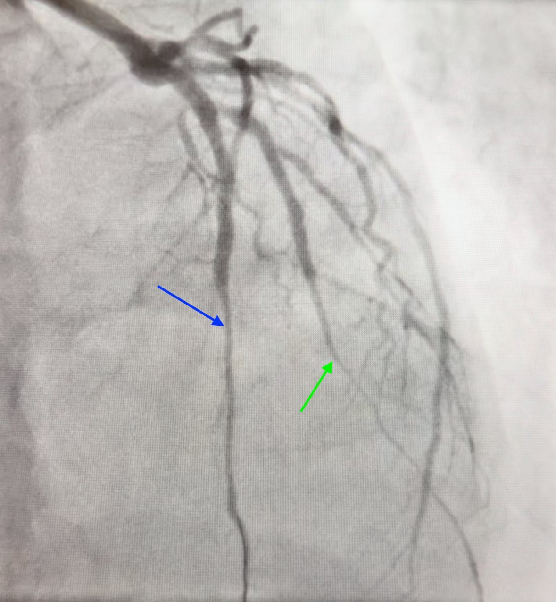
Đây là tư thế RAO (chếch trước phải) chếch đầu của các mạch vành trái sau khi lấy huyết khối và đặt stent. Mũi tên xanh dương chỉ LAD, mũi tên xanh lá chỉ nhánh chéo thứ nhất. Giờ đây có dòng chảy TIMI 3 qua mọi tổn thương, nhưng có co mạch lan tỏa.

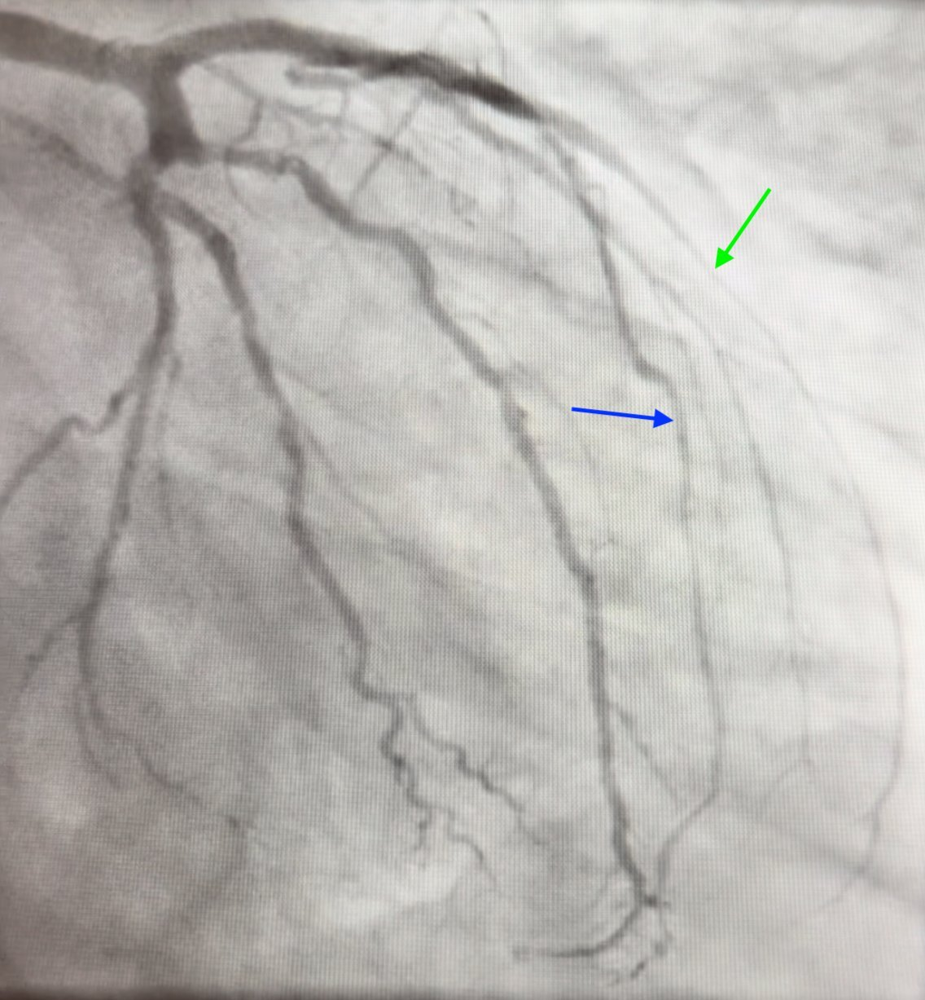
Đây là tư thế RAO chếch chân. LAD (xanh dương) và nhánh chéo thứ nhất (xanh lá) hẹp hơn rõ rệt so với các mạch khác.
Đây là điện tâm đồ sau thông tim:

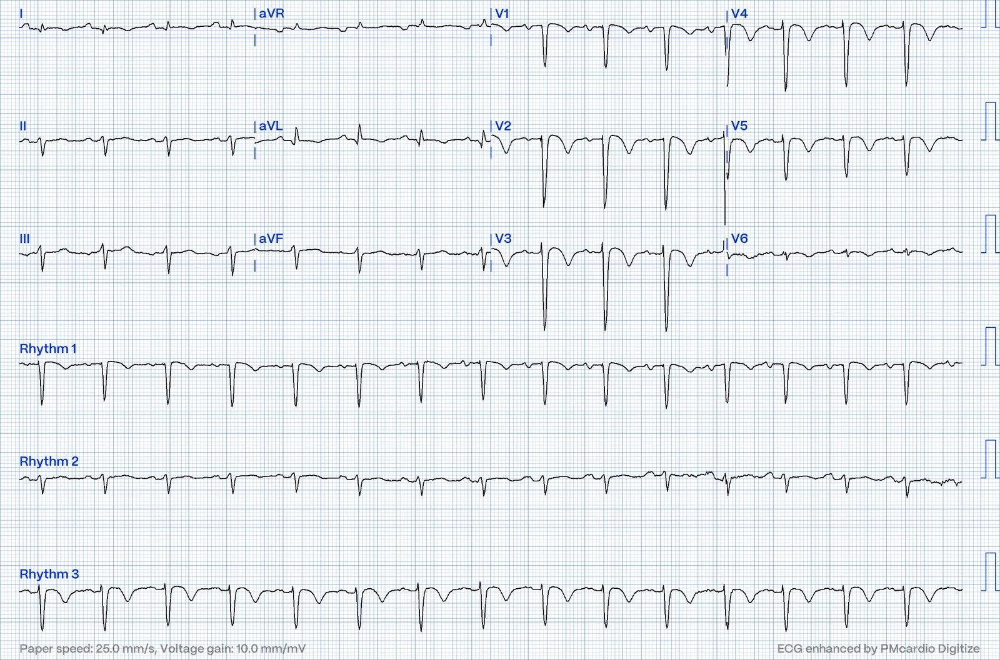
Không
có thay đổi. Hình thái phình thất trái vẫn tồn tại. Hầu như chẳng còn
bao nhiêu cơ tim còn sống để PCI cứu vớt sau một tháng
tắc.
Vào ngày thứ ba nằm viện, ông được chụp MRI tim:

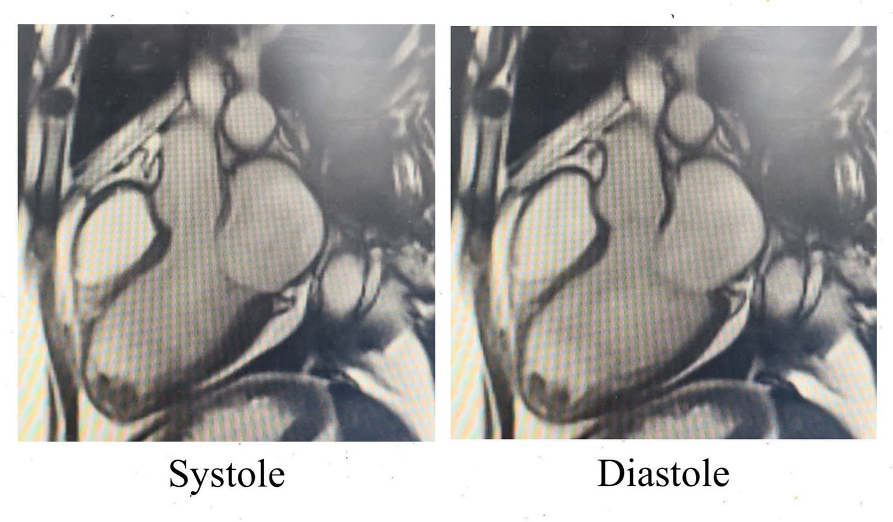
MRI cho thấy:
- Tăng thể tích thất trái
- Rối loạn chức năng thất trái theo từng vùng mức độ nặng, EF tính được là 26%
- Mỏng thành và vô động toàn bộ thành trước, các vùng mỏm, toàn bộ vách trước và thành dưới đoạn giữa.
- Huyết khối mỏm lớn, nhiều thùy (khối màu đen ở mỏm)
- Nhồi máu xuyên thành với cơ tim không còn sống trên toàn bộ vùng chi phối thành trước và mọi vùng mỏm
Cuối
cùng bệnh nhân được xuất viện. Ba tháng
sau, ông tái khám để đánh giá lại chức năng
thất trái. Siêu âm tim cho thấy EF 20-25%. Đến thời điểm này,
chức năng thất trái không cải thiện và ông đã qua giai đoạn hồi
phục của nhồi máu cơ tim, nên quyết định cấy ICD để
dự phòng loạn nhịp.
Một tháng sau khi cấy ICD, ông được ghi điện tâm đồ:

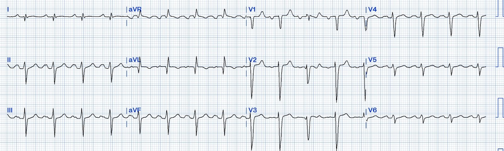
Đáng chú ý, các sóng T đảo ngược nay đã hết. Tuy nhiên, sóng R vẫn chưa phục hồi.
Hiện ông được tái khám định kỳ với nhóm suy tim.
Những điểm cần học
Tất cả những điều này lẽ ra đã có thể tránh được nhờ:
1. Đọc điện tâm đồ ở mức chuyên gia — điều này là đòi hỏi quá nhiều với bất kỳ bác sĩ lâm sàng nào
2. Queen of Hearts — giúp chẩn đoán dễ dàng
3. Bệnh nhân lẽ ra phải được làm troponin nhiều lần liên tiếp. Điều này sẽ giúp chẩn đoán nhồi máu cơ tim sớm hơn, nhưng có thể vẫn bị xếp là “NSTEMI” và không được can thiệp cho tới khi toàn bộ vùng cơ tim đó đã mất.

===================================
BÌNH LUẬN CỦA TÔI, bởi KEN GRAUER, MD (11/7/2024):
===================================
Tôi xem xét ca hôm nay từ góc nhìn của một nhà giáo dục y học gia đình, người đã có kinh nghiệm giảng dạy đọc điện tâm đồ trên toàn quốc cho các bác sĩ chăm sóc ban đầu trong hơn 3 thập kỷ.
- Trong chương trình đào tạo bác sĩ nội trú chăm sóc ban đầu của chúng tôi, dù đội ngũ giảng viên có năng lực đọc cơ bản phim X-quang thường gặp ở tuyến chăm sóc ban đầu — tất cả phim X-quang của chúng tôi vẫn được bác sĩ chẩn đoán hình ảnh đọc lại.
- Tôi đọc lại toàn bộ điện tâm đồ cho 35 người hành nghề của chúng tôi.
- ĐIỀU CỐT LÕI: Trừ khi các bác sĩ chăm sóc ban đầu đạt tới trình độ xuất sắc trong đọc phim X-quang và điện tâm đồ ngoại trú — các xét nghiệm này nên được các bác sĩ có chuyên môn được công nhận trong lĩnh vực này đọc lại một cách thường quy.
BÌNH LUẬN CỦA TÁC GIẢ: Tôi mở đầu suy nghĩ về bài Blog hôm nay bằng những chiêm nghiệm trên để làm rõ bối cảnh cho những lo ngại của tôi về ca này.
- Bệnh nhân này không nên bị cho về nhà từ phòng khám chăm sóc ban đầu với bệnh sử như vậy và điện tâm đồ ban đầu hôm nay (mà tôi đã sao lại và đánh dấu trong Hình 1).
- Bệnh sử 2 ngày với “cảm giác bị đè nghiến và khó chịu”, tăng khi gắng sức và không đỡ với bất kỳ biện pháp nào đã thử ở nhà — ngay cả khi vị trí chủ yếu ở “thượng vị” — là một biểu hiện có thể có của ACS (hội chứng vành cấp — Acute Coronary Syndrome) cần được nhận ra.
- Các bác sĩ chăm sóc ban đầu có được đào tạo về những điều cơ bản của đọc điện tâm đồ. Dù không được kỳ vọng là chuyên gia nếu họ chỉ hành nghề ngoại trú, nơi hiếm khi chỉ định điện tâm đồ — các bác sĩ chăm sóc ban đầu này vẫn được kỳ vọng nhận ra rằng ở một bệnh nhân có triệu chứng mới (như ca hôm nay) — điện tâm đồ ở Hình 1 không “bình thường”.
- Nếu việc đào tạo bác sĩ chăm sóc ban đầu khiến họ không thể nhận ra rằng điện tâm đồ ban đầu hôm nay không bình thường — thì trước khi cho bệnh nhân về, phải có một hình thức đọc lại dự phòng nào đó. Như Tiến sĩ Smith đã nói — Queen of Hearts là một hình thức đọc lại dự phòng tức thì, với độ chính xác ấn tượng trong nhận diện OMI trên điện tâm đồ.
- Ngoài ra (và lý tưởng là bổ sung cho QOH) — vào năm 2024, bất kỳ bác sĩ chăm sóc ban đầu nào cũng nên có thể tiếp cận ngay việc hội chẩn trực tuyến với một chuyên gia đọc điện tâm đồ tại chỗ hoặc từ xa trong vòng vài phút.
- Dù vậy — điều còn đáng lo ngại hơn ở ca hôm nay là kết quả đọc lại của bác sĩ tim mạch đối với điện tâm đồ ban đầu đã bỏ sót hoàn toàn chẩn đoán. Thiếu sót này của chuyên khoa tim mạch thật khó biện minh.

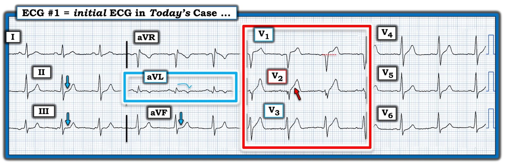
Điện tâm đồ ban đầu hôm nay:
Như Tiến sĩ Smith đã nói — điện tâm đồ ở Hình 1 chẩn đoán OMI LAD cấp.
- Tôi đã khoanh trong hình chữ nhật ĐỎ lý do vì sao điện tâm đồ ban đầu của ca hôm nay không được phép bị bỏ qua. Đơn giản là không có cách nào để phức bộ QRS và sóng ST-T ở chuyển đạo V2 có thể được đọc là “bình thường”. Sóng ST-T tối cấp ở chuyển đạo này hoàn toàn lấn át phức bộ QRS nhỏ xíu. Một biến thể tái cực sẽ không bao giờ như vậy. Ngoài chiều cao — sóng ST-T này còn có đáy cực kỳ rộng và đoạn khởi đầu ST thẳng đuỗn (mũi tên ĐỎ).
- Một điểm tinh tế hơn — phức bộ QRS ở chuyển đạo V2 là bất thường. Dù hình dạng QRS của từng phức bộ ở chuyển đạo này có thay đổi — “chủ đề” chung là phân mảnh QRS, với chỉ còn một vết tích nhỏ xíu của sóng r mà tôi đọc là một “tương đương” sóng Q ở bệnh nhân này, người đã có triệu chứng từ 2 ngày nay.
- Trong bối cảnh bất thường rõ rệt này ở chuyển đạo V2 — 2 chuyển đạo lân cận trong hình chữ nhật ĐỎ cũng bất thường rõ ràng. Chuyển đạo V1 bình thường không bao giờ có ST chênh lên nhiều như thế, cũng như sóng T cao như thế. Và, với những bất thường này ở các chuyển đạo V1,V2 — sóng ST-T ở chuyển đạo V3 cũng tối cấp (cao hơn và rộng đáy hơn mức dự kiến, xét theo biên độ khiêm tốn của QRS ở chuyển đạo này).
- Ủng hộ cho việc điện tâm đồ này biểu hiện OMI LAD đoạn gần cấp — là phức bộ bất thường rõ ràng ở chuyển đạo aVL (trong hình chữ nhật XANH) — cho thấy một sóng Q (xét theo kích thước nhỏ xíu của QRS ở chuyển đạo này) rộng và sâu đến bất ngờ — cũng như ST chênh lên nhẹ-nhưng-có-thật với hình thái dạng vòm kèm sóng T đảo ngược ở phần cuối. Các dấu hiệu điện tâm đồ cấp tính kiểu này ở chuyển đạo aVL thường đi kèm OMI LAD đoạn gần. Sóng Q ở aVL và sự phân mảnh “tương đương sóng Q” ở chuyển đạo V2 gợi ý rằng ở bệnh nhân có tiền sử triệu chứng 2 ngày này — nhồi máu đã xảy ra rồi.
- Cuối cùng, như BS. Smith đã nêu — ST dẹt tinh tế-nhưng-có-thật ở mỗi chuyển đạo thành dưới (các mũi tên XANH) phù hợp với ST chênh xuống soi gương . Xin nhấn mạnh — Nếu là một dấu hiệu đơn độc, tôi sẽ không chắc về ý nghĩa lâm sàng của các sóng ST-T ở chuyển đạo thành dưới. Nhưng trong bối cảnh các chuyển đạo V1,V2,V3 và aVL đã chẩn đoán OMI LAD cấp — mức độ ST dẹt tinh tế ở các chuyển đạo II,III,aVF rõ ràng phù hợp với thay đổi sóng ST-T soi gương.
Kết luận: Ca hôm nay đáng lo ngại vì những sơ suất đáng tiếc lẽ ra không nên xảy ra. Hậu quả của những sơ suất này là bệnh nhân phải gắn bó suốt đời với phòng khám suy tim.